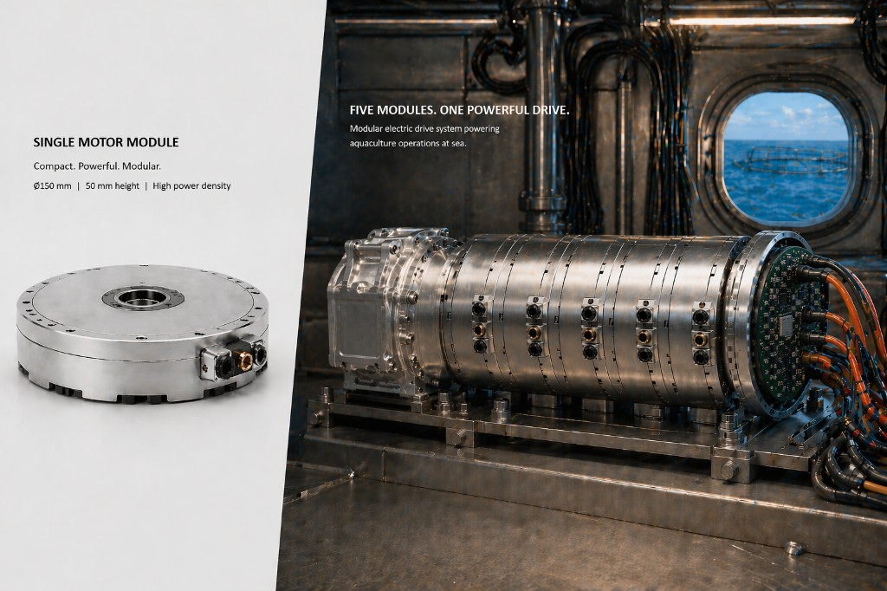

Circularity, Efficiency, and Replication Potential
MODYFLEX is positioned to reduce energy losses, lower material throughput, and replace hydraulic systems in sensitive environments by shifting from replacement logic to modular upgrade logic.
Evidence-Oriented Deployment Narrative
Pilot Contexts
- Norway site focused on marine and aquaculture duty profiles.
- Bulgaria site focused on industrial manufacturing conditions.
- Replication pathway includes additional EU deployment contexts.
What Will Be Measured
- Energy savings versus conventional baseline systems.
- Avoided CO2 emissions based on operational datasets.
- Material and maintenance efficiency from modular replacements.
